<title>Declarative Dragging</title>
<meta name="claude:viewport-fit-sides" content="cover" />
<link rel="preconnect" href="https://fonts.googleapis.com" />
<link rel="preconnect" href="https://fonts.gstatic.com" crossorigin />
<link
  rel="stylesheet"
  href="https://fonts.googleapis.com/css2?family=IBM+Plex+Sans:ital,wght@0,400;0,500;0,600;1,400&family=IBM+Plex+Mono:wght@400;500&family=Space+Grotesk:wght@500;600&display=swap"
/>
<style>
  /* Layout: one reading column; each example is a card with the live demo, its filmstrip, then code and notes. Rules and rationale follow below. */
  :root {
    --bg: #f4f5f7;
    --surface: #ffffff;
    --sunken: #eef0f4;
    --fg: #1c2230;
    --muted: #5a6274;
    --line: #d9dde5;
    --accent: #2f5fd0;
    --panel: #ffffff;
    --accent-soft: #e5ecfb;
    --choice: #1f7a52;
    --choice-soft: #e2f3ea;
    --tok-kw: #8a3fb8;
    --tok-str: #2c7a3c;
    --tok-num: #b0521b;
    --tok-fn: #2459c4;
    --tok-com: #7b8394;
    --tok-attr: #0f6f84;
    --font-display: "Space Grotesk", "IBM Plex Sans", system-ui, sans-serif;
    --font-body:
      "IBM Plex Sans", system-ui, -apple-system, "Segoe UI", sans-serif;
    --font-mono:
      "IBM Plex Mono", ui-monospace, "SF Mono", Menlo, Consolas, monospace;
  }
  @media (prefers-color-scheme: dark) {
    :root:not([data-theme="light"]) {
      --bg: #14171d;
      --surface: #1c2028;
      --sunken: #232833;
      --fg: #e4e7ee;
      --muted: #a0a8b8;
      --line: #333a47;
      --accent: #8db0ff;
      --accent-soft: #263457;
      --choice: #7fd3a8;
      --choice-soft: #1e3a2d;
      --tok-kw: #d3a4f5;
      --tok-str: #9fd69a;
      --tok-num: #f2b07f;
      --tok-fn: #8fb6ff;
      --tok-com: #8690a3;
      --tok-attr: #78d0e0;
      color-scheme: dark;
    }
  }
  :root[data-theme="dark"] {
    --bg: #14171d;
    --surface: #1c2028;
    --sunken: #232833;
    --fg: #e4e7ee;
    --muted: #a0a8b8;
    --line: #333a47;
    --accent: #8db0ff;
    --accent-soft: #263457;
    --choice: #7fd3a8;
    --choice-soft: #1e3a2d;
    --tok-kw: #d3a4f5;
    --tok-str: #9fd69a;
    --tok-num: #f2b07f;
    --tok-fn: #8fb6ff;
    --tok-com: #8690a3;
    --tok-attr: #78d0e0;
    color-scheme: dark;
  }

  body {
    background: var(--bg);
    color: var(--fg);
    font-family: var(--font-body);
    font-size: 15px;
    line-height: 1.55;
  }
  .page {
    max-width: 920px;
    margin: 0 auto;
    padding-left: max(16px, env(safe-area-inset-left, 0px));
    padding-right: max(16px, env(safe-area-inset-right, 0px));
    padding-block: 40px 64px;
    display: grid;
    gap: 40px;
  }
  h1,
  h2,
  h3 {
    font-family: var(--font-display);
    font-weight: 600;
    line-height: 1.2;
    text-wrap: balance;
    margin: 0;
  }
  h1 {
    font-size: 2rem;
    letter-spacing: -0.01em;
  }
  h2 {
    font-size: 1.35rem;
  }
  h3 {
    font-size: 1.05rem;
  }
  p {
    margin: 0;
    max-width: 68ch;
  }
  a {
    color: var(--accent);
  }
  a:focus-visible,
  summary:focus-visible,
  input:focus-visible {
    outline: 2px solid var(--accent);
    outline-offset: 2px;
  }
  code {
    font-family: var(--font-mono);
    font-size: 0.88em;
  }
  :not(pre) > code {
    background: var(--sunken);
    padding: 0.1em 0.35em;
    overflow-wrap: anywhere;
    border-radius: 4px;
  }
  ul {
    margin: 0;
    padding-left: 1.2em;
    display: grid;
    gap: 6px;
    max-width: 68ch;
  }

  /* Top */
  .intro {
    display: grid;
    gap: 16px;
  }
  .intro .summary {
    font-size: 1.05rem;
  }
  .rules li::marker {
    color: var(--accent);
  }
  .status {
    font-size: 0.9rem;
    color: var(--muted);
    border-left: 3px solid var(--line);
    padding-left: 12px;
  }

  /* Example cards */
  .examples {
    display: grid;
    gap: 28px;
  }
  .card {
    background: var(--surface);
    border: 1px solid var(--line);
    border-radius: 10px;
    padding: 20px;
    display: grid;
    gap: 16px;
    min-width: 0;
  }
  .card > *,
  .page > *,
  .examples > *,
  .section > *,
  .approach > * {
    min-width: 0;
  }
  .live {
    display: grid;
    gap: 8px;
  }
  .live-bar {
    display: flex;
    flex-wrap: wrap;
    align-items: center;
    justify-content: space-between;
    gap: 8px 16px;
  }
  .caption {
    color: var(--muted);
    font-size: 0.92rem;
  }
  .toggle {
    display: inline-flex;
    align-items: center;
    gap: 6px;
    font-size: 0.88rem;
    cursor: pointer;
    user-select: none;
  }
  .toggle input {
    margin: 0;
    accent-color: var(--accent);
  }
  .stage {
    width: fit-content;
    max-width: 100%;
    overflow-x: auto;
    border: 1px solid var(--line);
    border-radius: 8px;
    background: var(--panel);
  }
  .stage > div {
    width: max-content;
    touch-action: none;
  }

  .strip {
    display: grid;
    grid-template-columns: repeat(4, minmax(150px, 1fr));
    gap: 8px;
    overflow-x: auto;
    padding-bottom: 2px;
  }
  .strip figure {
    margin: 0;
    display: grid;
    gap: 4px;
  }
  .strip img {
    display: block;
    width: 100%;
    height: auto;
    border: 1px solid var(--line);
    border-radius: 6px;
    background: var(--panel);
  }
  .strip figcaption {
    font-size: 0.75rem;
    letter-spacing: 0.04em;
    text-transform: uppercase;
    color: var(--muted);
  }

  .label {
    font-size: 0.75rem;
    font-weight: 600;
    letter-spacing: 0.05em;
    text-transform: uppercase;
    color: var(--muted);
    margin-bottom: 6px;
  }
  pre {
    margin: 0;
    background: var(--sunken);
    border-radius: 8px;
    padding: 12px 14px;
    overflow-x: auto;
    font-size: 0.85rem;
    line-height: 1.5;
  }
  pre code {
    font-size: inherit;
    background: none;
    padding: 0;
  }
  .hljs-keyword,
  .hljs-built_in,
  .hljs-literal {
    color: var(--tok-kw);
  }
  .hljs-string,
  .hljs-template-string {
    color: var(--tok-str);
  }
  .hljs-number {
    color: var(--tok-num);
  }
  .hljs-title,
  .hljs-title.function_ {
    color: var(--tok-fn);
  }
  .hljs-comment {
    color: var(--tok-com);
    font-style: italic;
  }
  .hljs-attr,
  .hljs-property,
  .hljs-params,
  .hljs-subst {
    color: var(--tok-attr);
  }
  .hljs-variable,
  .hljs-punctuation,
  .hljs-operator {
    color: var(--fg);
  }

  details {
    border: 1px solid var(--line);
    border-radius: 8px;
    background: var(--surface);
  }
  details > summary {
    cursor: pointer;
    padding: 10px 14px;
    font-weight: 500;
  }
  details[open] > summary {
    border-bottom: 1px solid var(--line);
  }
  details > .inner {
    padding: 12px 14px;
    display: grid;
    gap: 12px;
    min-width: 0;
  }
  .card details {
    background: transparent;
  }
  .card details > .inner {
    padding: 0;
  }
  .card details[open] > .inner pre {
    border-radius: 0 0 8px 8px;
  }

  .notes {
    display: grid;
    gap: 8px;
  }

  .fork {
    display: grid;
    gap: 8px;
  }
  .fork-options {
    display: grid;
    grid-template-columns: repeat(auto-fit, minmax(240px, 1fr));
    gap: 8px;
  }
  .option {
    border: 1px solid var(--line);
    border-radius: 8px;
    padding: 10px 12px;
    font-size: 0.92rem;
    display: grid;
    gap: 4px;
    align-content: start;
  }
  .option.chosen {
    border-color: var(--choice);
    background: var(--choice-soft);
  }
  .pill {
    justify-self: start;
    font-size: 0.72rem;
    font-weight: 600;
    letter-spacing: 0.04em;
    text-transform: uppercase;
    color: var(--choice);
  }
  .pill.plain {
    color: var(--muted);
  }
  .tag {
    display: inline-block;
    font-size: 0.72rem;
    font-weight: 600;
    letter-spacing: 0.04em;
    text-transform: uppercase;
    color: var(--muted);
    border: 1px solid var(--line);
    border-radius: 999px;
    padding: 1px 8px;
    vertical-align: middle;
  }

  /* Lower sections */
  .section {
    display: grid;
    gap: 14px;
    min-width: 0;
  }
  .table-wrap {
    overflow-x: auto;
    border: 1px solid var(--line);
    border-radius: 8px;
    background: var(--surface);
  }
  table {
    border-collapse: collapse;
    width: 100%;
    font-size: 0.9rem;
  }
  th,
  td {
    text-align: left;
    vertical-align: top;
    padding: 10px 12px;
    border-bottom: 1px solid var(--line);
  }
  tr:last-child td {
    border-bottom: none;
  }
  th {
    font-weight: 600;
    background: var(--sunken);
  }
  td.num,
  th.num {
    font-variant-numeric: tabular-nums;
    white-space: nowrap;
  }
  .measure td:first-child {
    white-space: nowrap;
  }
  .approach {
    display: grid;
    gap: 8px;
  }
  .approach ul {
    list-style: none;
    padding: 0;
    gap: 8px;
  }
  .approach li {
    border: 1px solid var(--line);
    border-radius: 8px;
    padding: 10px 12px;
    background: var(--surface);
  }
  .approach li.rec {
    border-color: var(--accent);
    background: var(--accent-soft);
  }
  .rec-mark {
    font-size: 0.72rem;
    font-weight: 600;
    letter-spacing: 0.04em;
    text-transform: uppercase;
    color: var(--accent);
    margin-left: 6px;
  }
  .small {
    font-size: 0.9rem;
    color: var(--muted);
  }
  .two-col {
    display: grid;
    grid-template-columns: repeat(auto-fit, minmax(280px, 1fr));
    gap: 16px;
  }
  .two-col > * {
    min-width: 0;
  }

  @media (max-width: 520px) {
    .page {
      padding-block: 24px 48px;
      gap: 32px;
    }
    h1 {
      font-size: 1.6rem;
    }
    .card {
      padding: 14px;
    }
  }
  @media (prefers-reduced-motion: reduce) {
    * {
      scroll-behavior: auto !important;
    }
  }
</style>

<main class="page">
  <header class="intro">
    <h1>Declarative Dragging</h1>
    <p class="summary">
      Build the ideas of Dragology (Declarative Dragging, Horowitz, Blinn and
      Heer, UIST 2026) into GoFish instead of using the library. A mark says
      which field a drag edits. GoFish derives the states the drag can reach
      from the spec, lays each one out, and blends between the layouts as the
      pointer moves.
    </p>
    <ul class="rules">
      <li>
        A mark names the field a drag edits:
        <code>rect(...).drag(Drag.edit("room"))</code>.
      </li>
      <li>
        The states a drag can reach are derived from the spec.
        <code>Drag.states(fn)</code> lists them by hand when that is not enough.
      </li>
      <li>
        A drag edits either rows (<code>Drag.edit</code>) or the order of a
        domain (<code>Drag.reorder</code>). A drag that would produce a wrong
        chart, such as moving a stacked segment to another lake, is not offered.
      </li>
      <li>
        A drag is a <code>transition</code> between laid-out states, with the
        pointer in place of the clock.
      </li>
      <li>
        The data is a <code>signal</code>, and a drop writes the edited rows
        back to it.
      </li>
    </ul>
    <p class="status">
      The syntax is proposed and not signed off. The demos below run on a small
      prototype engine in story code (942 lines, no change to library source, no
      <code>dragology</code> or React dependency). Nothing here is implemented
      in the library.
    </p>
  </header>

  <section class="examples" aria-label="Examples">
    <!-- Reorder bars -->
    <article class="card" id="reorder-bars">
      <h2>Reorder bars</h2>
      <div class="live" data-demo="reorder-bars">
        <div class="live-bar">
          <span class="caption"
            >Drag a bar left or right to move its lake.</span
          >
          <label class="toggle"
            ><input type="checkbox" id="dbg-reorder-bars" /> Show targets</label
          >
        </div>
        <div class="stage"><div class="mount"></div></div>
      </div>
      <div class="strip">
        <figure>
          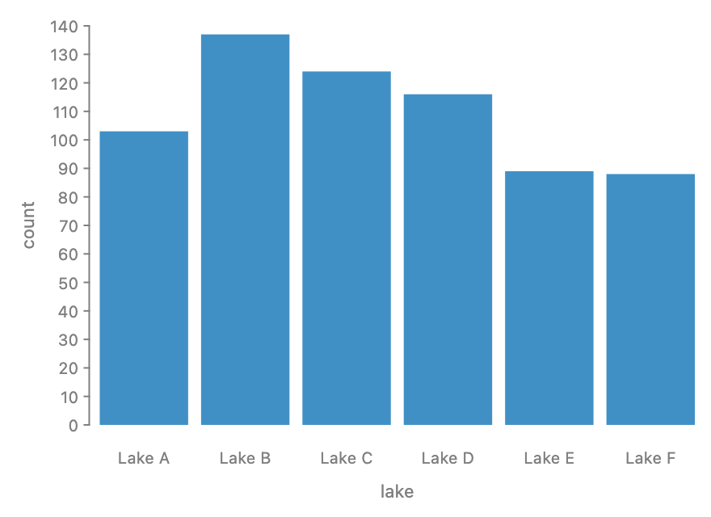
          <figcaption>idle</figcaption>
        </figure>
        <figure>
          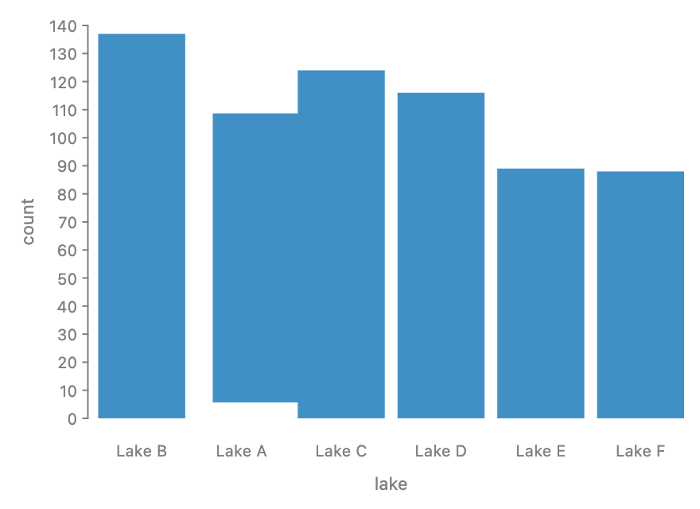
          <figcaption>mid-drag</figcaption>
        </figure>
        <figure>
          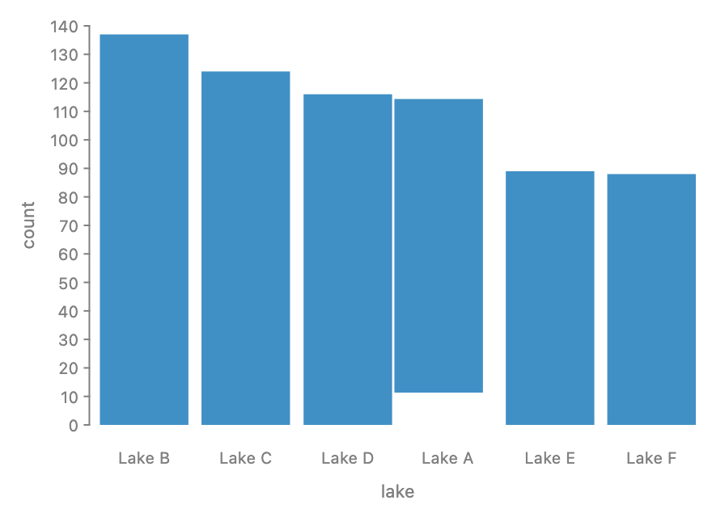
          <figcaption>mid-drag</figcaption>
        </figure>
        <figure>
          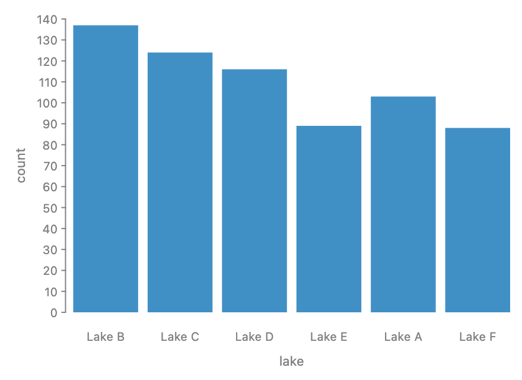
          <figcaption>after drop</figcaption>
        </figure>
      </div>
      <div>
        <div class="label">Proposed</div>
        <pre><code class="language-javascript">const catches = signal(seafood);

chart(catches)
  .flow(spread({ by: "lake", dir: "x" }))
  .mark(rect({ h: "count" }).drag(Drag.reorder()))
  .render(container, { w: 420, h: 300 });</code></pre>
      </div>
      <details>
        <summary>Prototype today</summary>
        <div class="inner">
          <pre><code class="language-javascript">mountDraggable(el, {
  data: seafood,
  order: { lake: levels("lake") },
  key: (r) =&gt; `${r.lake}-${r.species}`,
  spec: (rows, order) =&gt;
    chart(rows, { schema: { lake: Unit({ domain: Domain.discrete(order.lake) }) } })
      .flow(spread({ by: "lake", dir: "x" }))
      .mark(rect({ h: "count" })),
  w: 420,
  h: 300,
  drag: { reorder: "lake", feel: "floating", precompute: o.precompute },
  debug: o.debug,
});</code></pre>
        </div>
      </details>
      <div class="notes">
        <p>
          <code>Drag.reorder()</code> reorders the split that holds the mark.
          Here that split is <code>spread({ by: "lake" })</code>, so the drag
          edits the order of the lake domain. The rows do not change. The axis
          labels travel with the bars because they are part of each layout.
        </p>
      </div>
    </article>

    <!-- Reorder a stack -->
    <article class="card" id="reorder-stack">
      <h2>Reorder a stack</h2>
      <div class="live" data-demo="reorder-stack">
        <div class="live-bar">
          <span class="caption"
            >Drag a colored segment up or down to reorder every stack.</span
          >
          <label class="toggle"
            ><input type="checkbox" id="dbg-reorder-stack" /> Show
            targets</label
          >
        </div>
        <div class="stage"><div class="mount"></div></div>
      </div>
      <div class="strip">
        <figure>
          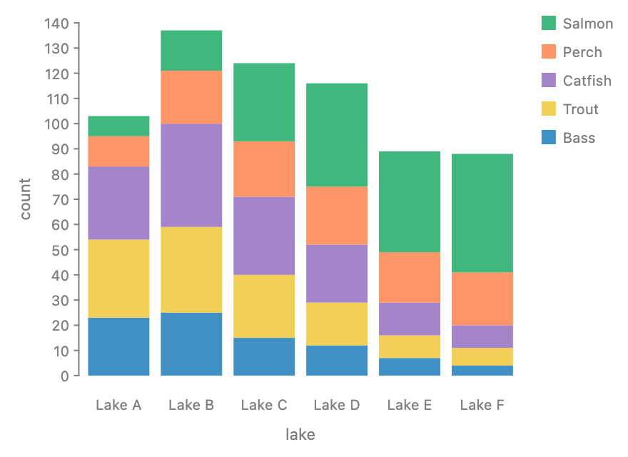
          <figcaption>idle</figcaption>
        </figure>
        <figure>
          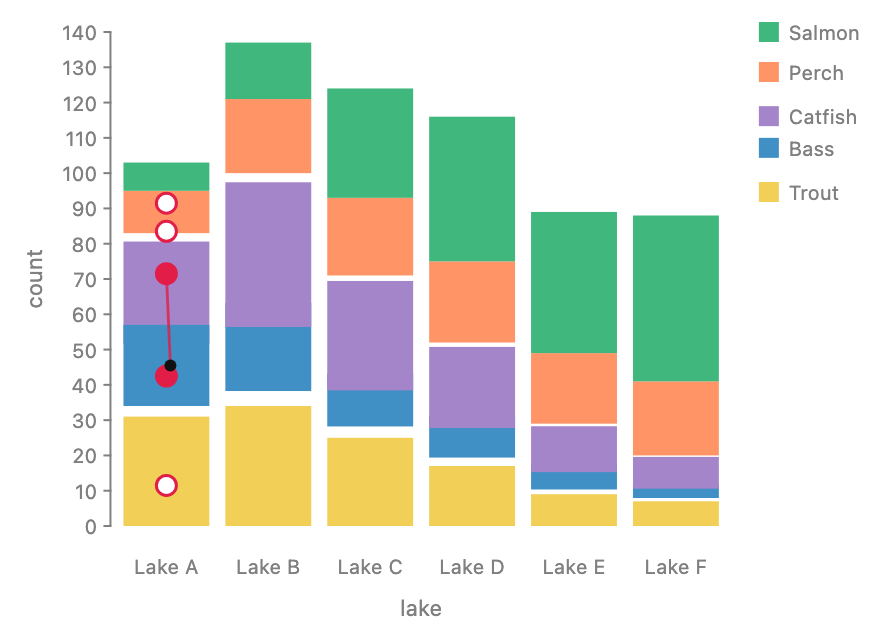
          <figcaption>mid-drag, targets shown</figcaption>
        </figure>
        <figure>
          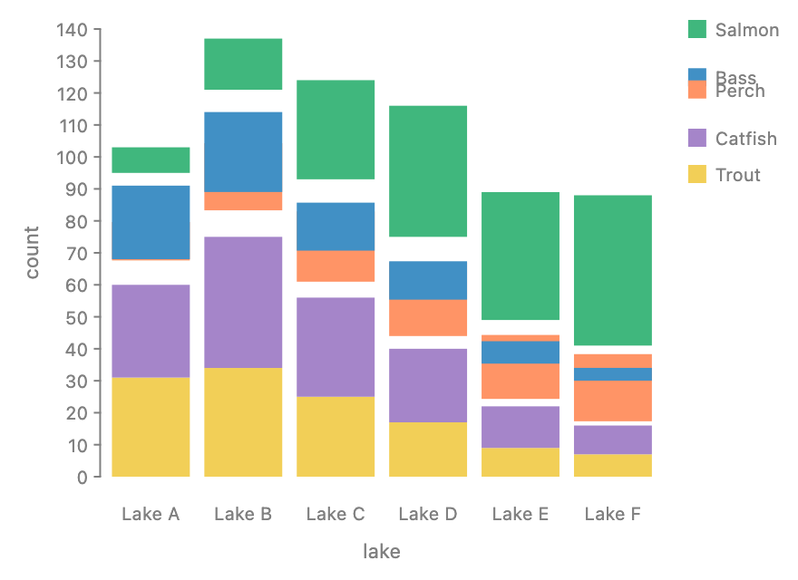
          <figcaption>mid-drag</figcaption>
        </figure>
        <figure>
          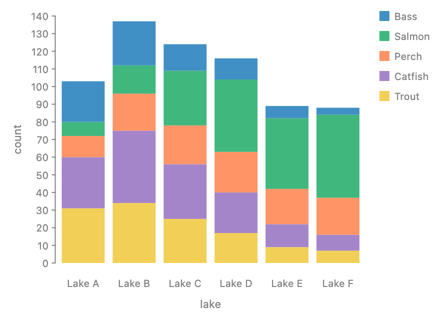
          <figcaption>after drop</figcaption>
        </figure>
      </div>
      <div>
        <div class="label">Proposed</div>
        <pre><code class="language-javascript">chart(catches)
  .flow(spread({ by: "lake", dir: "x" }), stack({ by: "species", dir: "y" }))
  .mark(rect({ h: "count", fill: "species" }).drag(Drag.reorder()))
  .render(container, { w: 420, h: 300 });</code></pre>
      </div>
      <details>
        <summary>Prototype today</summary>
        <div class="inner">
          <pre><code class="language-javascript">mountDraggable(el, {
  data: seafood,
  order: { species: levels("species") },
  key: (r) =&gt; `${r.lake}-${r.species}`,
  spec: (rows, order) =&gt;
    chart(rows, {
      schema: { species: Unit({ domain: Domain.discrete(order.species) }) },
      color: speciesColors,
    })
      .flow(
        spread({ by: "lake", dir: "x" }),
        stack({ by: "species", dir: "y" })
      )
      .mark(rect({ h: "count", fill: "species" })),
  w: 420,
  h: 300,
  drag: { reorder: "species", feel: "between", precompute: o.precompute },
  debug: o.debug,
});</code></pre>
        </div>
      </details>
      <div class="notes">
        <p>
          <code>Drag.reorder()</code> reorders the split that holds the mark.
          Here that split is <code>stack({ by: "species" })</code>, so the drag
          edits the order of the species domain, not the rows. Every stack and
          the legend reorder together. In the first example the same call
          reorders the lake domain.
        </p>
        <p>
          The targets are one place per index in the stack, and they lie on one
          vertical line, so the segment blends along that line. The prototype
          keeps each species' color with a palette. Without it, colors follow
          the domain order too, and a reorder would recolor the species.
        </p>
      </div>
    </article>

    <!-- Scheduler -->
    <article class="card" id="scheduler">
      <h2>Scheduler (the paper's example)</h2>
      <div class="live" data-demo="scheduler">
        <div class="live-bar">
          <span class="caption"
            >Drag a meeting to another room, or along the day.</span
          >
          <label class="toggle"
            ><input type="checkbox" id="dbg-scheduler" /> Show targets</label
          >
        </div>
        <div class="stage"><div class="mount"></div></div>
      </div>
      <div class="strip">
        <figure>
          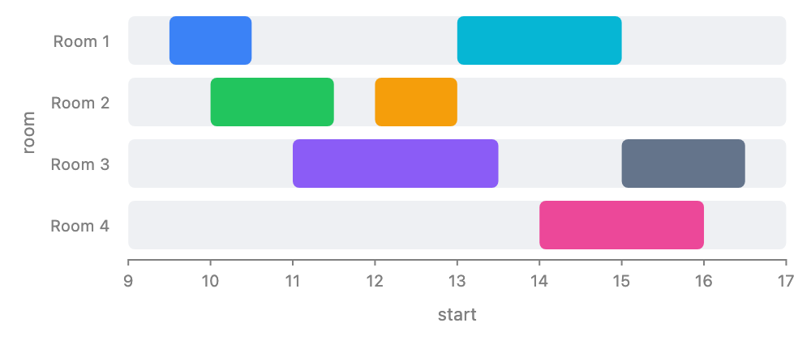
          <figcaption>idle</figcaption>
        </figure>
        <figure>
          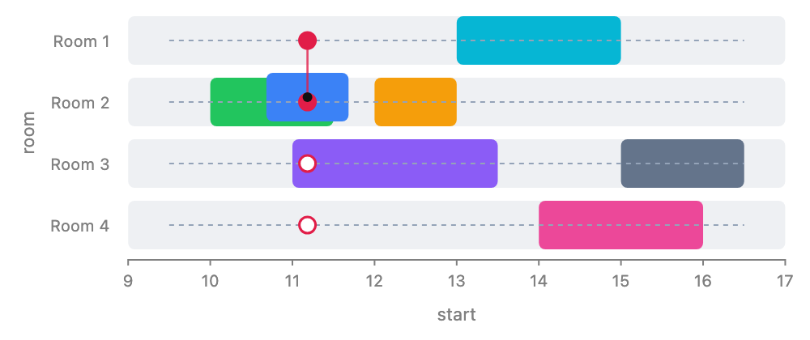
          <figcaption>mid-drag</figcaption>
        </figure>
        <figure>
          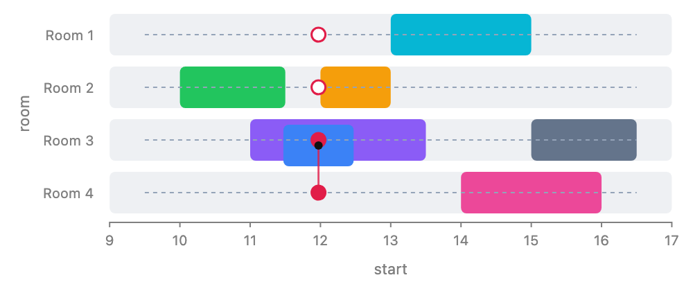
          <figcaption>mid-drag</figcaption>
        </figure>
        <figure>
          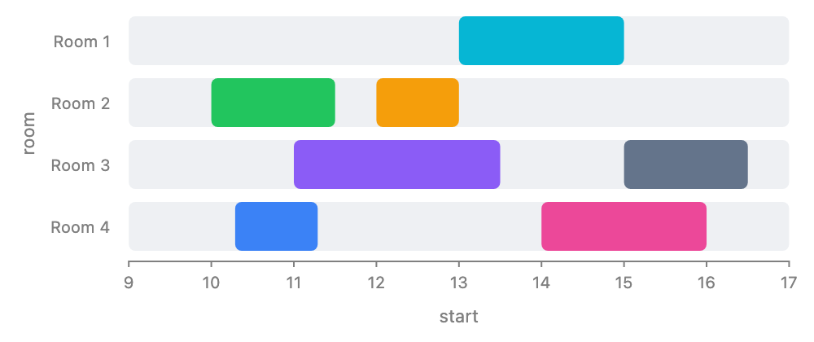
          <figcaption>after drop</figcaption>
        </figure>
      </div>
      <div>
        <div class="label">Proposed</div>
        <pre><code class="language-javascript">chart(meetings)
  .flow(spread({ by: "room", dir: "y", spacing: 8 }))
  .mark(
    rect({ x: "start", w: "length", h: 30, fill: "color" }).drag(
      Drag.edit("room", "start")
    )
  )
  .render(container, { w: 480, h: 200 });</code></pre>
      </div>
      <details>
        <summary>Prototype today</summary>
        <div class="inner">
          <pre><code class="language-javascript">mountDraggable(el, {
  data: [...days, ...meetings],
  key: (r) =&gt; r.id,
  spec: (rows) =&gt;
    chart(rows)
      .flow(spread({ by: "room", dir: "y", spacing: 8 }), group({ by: "id" }))
      .mark(
        rect({
          x: "start",
          w: "length",
          h: 30,
          rx: 4,
          fill: (d: any) =&gt; (Array.isArray(d) ? d[0] : d).color,
        })
      ),
  w: 480,
  h: 200,
  drag: {
    marks: (r) =&gt; r.kind === "meeting",
    edit: [
      "room",
      { field: "start", min: DAY.start, max: (r) =&gt; DAY.end - r.length },
    ],
    feel: "between",
    precompute: o.precompute,
  },
  debug: o.debug,
});</code></pre>
        </div>
      </details>
      <div class="notes">
        <p>
          Two fields. <code>room</code> is ordinal, so the bar jumps between
          rooms. <code>start</code> is continuous, so the bar slides, and the
          value comes from the inverse of the time scale. The same rule from
          #830 (the interaction grammar issue) applies: the kind of space the
          field lives in picks the behavior.
        </p>
        <p>
          The middle frames show the debugging overlay, borrowed from Dragology:
          one ring per room target and a line from the pointer to the chosen
          one.
        </p>
        <p>
          Dragology's own scheduler needs 53 comparable lines without data. The
          prototype's needs 29. Theirs also has edge resizing and a conflict
          graph, which the prototype does not.
        </p>
        <p>
          The time axis must not rescale while a bar is dragged along it. The
          proposal pins every axis domain to its value at pointer down and lets
          it settle at the drop. The prototype gets the same effect with a fixed
          9 to 17 domain.
        </p>
      </div>
    </article>

    <!-- Treemap reparent -->
    <article class="card" id="treemap-reparent">
      <h2>Reparent a treemap leaf</h2>
      <div class="live" data-demo="treemap-reparent">
        <div class="live-bar">
          <span class="caption"
            >Drag a tile anywhere. The rest snaps to the nearest group.</span
          >
          <label class="toggle"
            ><input type="checkbox" id="dbg-treemap-reparent" /> Show
            targets</label
          >
        </div>
        <div class="stage"><div class="mount"></div></div>
      </div>
      <div class="strip">
        <figure>
          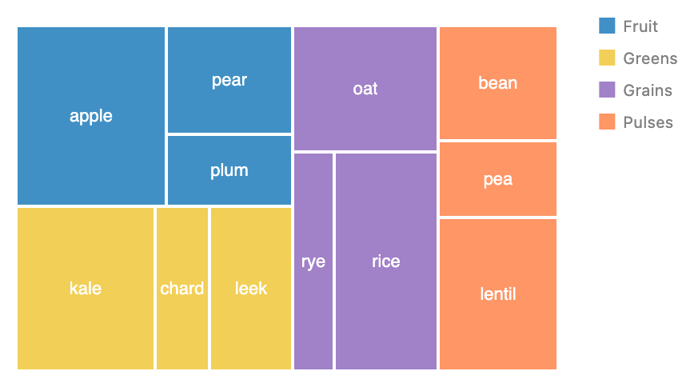
          <figcaption>idle</figcaption>
        </figure>
        <figure>
          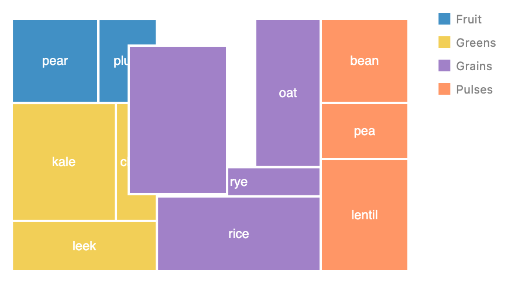
          <figcaption>mid-drag</figcaption>
        </figure>
        <figure>
          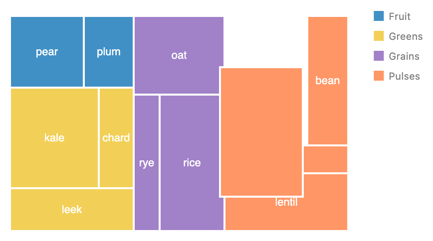
          <figcaption>mid-drag</figcaption>
        </figure>
        <figure>
          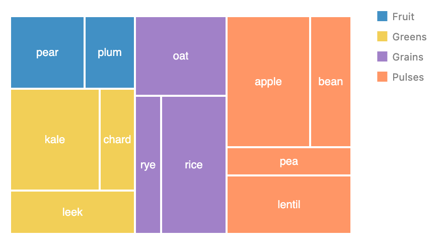
          <figcaption>after drop</figcaption>
        </figure>
      </div>
      <div>
        <div class="label">Proposed</div>
        <pre><code class="language-javascript">chart(leaves)
  .flow(
    treemap({ by: "group", size: "size", tile: Tile.squarify() }),
    treemap({ by: "id", size: "size", tile: Tile.squarify() })
  )
  .mark(rect({ fill: "group" }).label("id").drag(Drag.edit("group")))
  .render(container, { w: 420, h: 300 });</code></pre>
      </div>
      <details>
        <summary>Prototype today</summary>
        <div class="inner">
          <pre><code class="language-javascript">mountDraggable(el, {
  data: leaves,
  key: (r) =&gt; r.id,
  spec: (rows) =&gt;
    chart(rows, {
      axes: false,
      schema: { group: Unit({ domain: Domain.discrete(GROUPS) }) },
    })
      .flow(
        treemap({
          by: "group",
          size: "size",
          tile: Tile.squarify(),
          padding: 6,
          sort: "none",
        }),
        treemap({
          by: "id",
          size: "size",
          tile: Tile.squarify(),
          sort: "none",
        })
      )
      .mark(
        rect({ fill: "group", stroke: "white", strokeWidth: 2 }).label("id", {
          position: "center",
          color: "white",
          fontSize: 11,
        })
      ),
  w: 420,
  h: 300,
  drag: {
    // Reparent: the leaf into each other group, unless that would empty
    // the group it leaves (a group with no leaves disappears).
    states: ([leaf], rows) =&gt;
      rows.filter((r) =&gt; r.group === leaf.group).length &lt; 2
        ? [rows]
        : GROUPS.map((g) =&gt;
            rows.map((r) =&gt; (r.id === leaf.id ? { ...r, group: g } : r))
          ),
    // A treemap has no axis to blend along: the tile follows the pointer
    // and the rest snaps to the state of the nearest target.
    feel: "floating",
    precompute: o.precompute,
  },
  debug: o.debug,
});</code></pre>
        </div>
      </details>
      <div class="notes">
        <p>
          This is the case for layout. A Dragology author would have to write
          squarify. Here the tiles re-tile because each reachable state goes
          through the same layout.
        </p>
        <p>
          The dragged tile follows the pointer anywhere and is drawn on top. The
          rest of the picture snaps to the state whose target is nearest the
          tile, with a 150 ms tween, and the tile's size eases to its size in
          that state. On release the tile tweens into its slot. The tile's label
          stays in the slot, because a label has no row to tie it to its tile
          (see What GoFish needs first).
        </p>
        <p>
          The rule for the default feel: positions on an axis blend along their
          track. Layouts with no axis (treemap, pack, tree) use free dragging,
          with the rest snapping to the nearest state.
        </p>
      </div>
    </article>

    <!-- Escape hatch and Python -->
    <article class="card" id="escape-hatch">
      <h2>Escape hatch, and Python</h2>
      <div class="two-col">
        <div class="notes">
          <h3>
            <code>Drag.states</code> <span class="tag">Not prototyped</span>
          </h3>
          <p class="small">
            Not prototyped as a separate story. The prototype's treemap uses
            this path. <code>Drag.edit</code> is defined by rewriting into
            <code>Drag.states</code>. Anything the derived strategies cannot say
            (a tree drop that must not create a cycle) is written this way.
          </p>
        </div>
        <div class="notes">
          <h3>Python</h3>
          <p class="small">
            <code>Drag.edit</code> and <code>Drag.reorder</code> are plain data
            and cross the bridge like the other strategy families.
            <code>Drag.states</code> takes a function and uses the same callback
            route as <code>derive</code>.
          </p>
        </div>
      </div>
      <pre><code class="language-javascript">rect(...).drag(
  Drag.states((row, rows) =&gt;
    parentsOf(rows)
      .filter((p) =&gt; !isDescendant(p, row))
      .map((p) =&gt; rows.map((r) =&gt; (r === row ? { ...r, parent: p.id } : r)))
  )
);</code></pre>
      <pre><code class="language-python">chart(meetings).flow(spread(by="room", dir="y", spacing=8)).mark(
    rect(x="start", w="length", h=30, fill="color").drag(Drag.edit("room", "start"))
)</code></pre>
    </article>
  </section>

  <section class="section" id="map">
    <h2>How the ideas map</h2>
    <div class="table-wrap">
      <table>
        <thead>
          <tr>
            <th>Dragology</th>
            <th>GoFish</th>
          </tr>
        </thead>
        <tbody>
          <tr>
            <td>
              The author lists reachable states by hand. The study found this
              the hardest part ("a sharp cliff at the reorderable list").
            </td>
            <td>
              Derived from the spec. An edited field's values come from its
              domain. A reorder is every index of the split's domain.
            </td>
          </tr>
          <tr>
            <td>
              Render every reachable state, find the dragged element in each.
            </td>
            <td>
              Lay out every reachable state. Layout does not touch the DOM.
              Measured 10 to 20 ms per layout, 4 to 8 states per drag, 17 to 52
              ms at pointer down.
            </td>
          </tr>
          <tr>
            <td>Match elements across states by global id.</td>
            <td>Key join over rows.</td>
          </tr>
          <tr>
            <td>
              <code>between</code>: blend the renders by pointer position.
            </td>
            <td>
              A <code>transition</code> between laid-out states with the pointer
              in place of the clock. Blend and paint measured 0.5 to 1.5 ms per
              frame.
            </td>
          </tr>
          <tr>
            <td><code>vary</code>: optimizer over continuous parameters.</td>
            <td>
              Invert the scale. The prototype blends two cached layouts and
              matches a real layout of the dropped rows to 0 px.
            </td>
          </tr>
          <tr>
            <td>Drop: ease from the preview to the new state.</td>
            <td>The same key join tweens to the new layout.</td>
          </tr>
        </tbody>
      </table>
    </div>
    <details>
      <summary>Measured per demo</summary>
      <div class="inner">
        <p class="small">
          Playwright in headless Chromium on an Apple Silicon Mac, one drag per
          demo. The prototypes lay out the candidates at pointer down (lazy).
          "Per frame" covers blending the cached layouts and building the SVG,
          not the browser's own style, layout, and raster work.
        </p>
        <div class="table-wrap">
          <table class="measure">
            <thead>
              <tr>
                <th>Demo</th>
                <th class="num">Candidates per drag</th>
                <th class="num">ms per layout</th>
                <th class="num">Pointer-down latency</th>
                <th class="num">Blend + paint per frame (avg / max)</th>
              </tr>
            </thead>
            <tbody>
              <tr>
                <td>Reorder Bars</td>
                <td class="num">6</td>
                <td class="num">14.5</td>
                <td class="num">44 ms</td>
                <td class="num">0.7 / 1.9 ms</td>
              </tr>
              <tr>
                <td>Reorder Stack</td>
                <td class="num">5</td>
                <td class="num">20.3</td>
                <td class="num">51 ms</td>
                <td class="num">1.5 / 2.3 ms</td>
              </tr>
              <tr>
                <td>Scheduler</td>
                <td class="num">8 (4 rooms x 2 corners)</td>
                <td class="num">9.8</td>
                <td class="num">52 ms</td>
                <td class="num">0.9 / 1.8 ms</td>
              </tr>
              <tr>
                <td>Treemap Reparent</td>
                <td class="num">4</td>
                <td class="num">13.6</td>
                <td class="num">17 ms</td>
                <td class="num">0.6 / 1.1 ms</td>
              </tr>
            </tbody>
          </table>
        </div>
      </div>
    </details>
  </section>

  <section class="section" id="why-not">
    <h2>Why not the library itself</h2>
    <p>
      The paper itself says Dragology "is not concerned with the layout of
      graphical elements" and calls GoFish complementary. Its authors already
      bridge Bluefish this way in their repo, by re-parsing its SVG output. A
      bridge is possible, but every step of it works around something GoFish
      already knows.
    </p>
    <details>
      <summary>Read from Dragology's source (v0.2.0)</summary>
      <div class="inner">
        <ul>
          <li>
            Its view tree is React elements. React is a hard dependency even if
            GoFish did the painting.
          </li>
          <li>
            Its render function must be synchronous and is called once per
            reachable state when the pointer goes down, and up to about 200
            times per frame for a continuous drag. GoFish layout is async
            because it waits for fonts.
          </li>
          <li>
            It finds elements only from <code>transform</code> strings on
            elements with ids. GoFish paints marks at absolute
            <code>x</code> and <code>y</code>.
          </li>
          <li>
            For continuous drags it runs an optimizer (COBYLA) over the render
            function, because it cannot see inside the render. GoFish has the
            scale and can invert it.
          </li>
        </ul>
      </div>
    </details>
  </section>

  <section class="section" id="approaches">
    <h2>Approaches</h2>
    <div class="approach">
      <h3>Where the reachable states come from</h3>
      <ul>
        <li>
          <strong>Listed by hand</strong> (Dragology). Fully general. The
          paper's study shows authors struggle with it, and it repeats what the
          spec already says.
        </li>
        <li class="rec">
          <strong>Derived from the spec</strong
          ><span class="rec-mark">Recommended</span><br />The mark names the
          field. The operator that reads that field knows its values and where
          each one lands. Three rules cover the prototypes: an ordinal field
          gives one state per value in its domain, a continuous field gives the
          scale inverse, and a reorder gives one state per index. A drag edits
          either rows (<code>Drag.edit</code>) or the order of a domain
          (<code>Drag.reorder</code>). A drag that would produce a wrong chart,
          such as moving a stacked segment to another lake, is not offered. The
          hand-written list stays as <code>Drag.states</code>.
        </li>
      </ul>
    </div>
    <div class="approach">
      <h3>Where the declaration sits</h3>
      <ul>
        <li class="rec">
          <strong>A method on the mark</strong
          ><span class="rec-mark">Recommended</span><br /><code
            >rect(...).drag(Drag.edit("room"))</code
          >. It says which marks can be grabbed and what a grab edits, next to
          the channels that read the same fields. It matches
          <code>.transition(...)</code> and <code>.label(...)</code>.
        </li>
        <li>
          <strong>A method on the input</strong>, in the style of #830:
          <code>drag().pick(selectAll("meetings")).edit("room")</code>. This
          keeps all pointer work on one object, but a declarative drag is not a
          stream of pointer rows. It is a set of data edits. The raw
          <code>drag()</code> input stays for free gestures such as brushing and
          drawing, which the paper says declarative dragging does not cover. The
          overlap between the two is small: both start on pointer down over a
          mark.
        </li>
        <li>
          <strong>A bridge package around the library.</strong> Set aside for
          the reasons above.
        </li>
      </ul>
    </div>
    <div class="approach">
      <h3>Where the edit goes</h3>
      <ul>
        <li class="rec">
          <strong>The data is a <code>signal</code></strong
          ><span class="rec-mark">Recommended</span><br />A drop calls
          <code>set</code> with the edited rows, and the chart rerenders. A drag
          edits either rows (<code>Drag.edit</code>) or the order of a domain
          (<code>Drag.reorder</code>). A reorder writes the new order to the
          domain the split reads, and the chart rerenders the same way. A
          <code>.drag</code> on a chart whose data is a plain array is a loud
          error that names the fix.
        </li>
        <li>
          <strong>A hidden copy of the data inside the chart</strong>, which no
          other code could read.
        </li>
      </ul>
    </div>
  </section>

  <section class="section" id="needs">
    <h2>What GoFish needs first</h2>
    <p>From the prototype's walls. None of these is drag-specific.</p>
    <ul>
      <li>
        <strong>A keyed join between one render and the next</strong> (#914,
        noted as a declared shortcut in the build-in animation code). The drag
        blend and the drop tween both need it, and so does every animated
        update. The row key join on the animation grammar branch works on nodes
        and gives chrome no identity. The prototype keys ticks and legend
        swatches by their nearest label, which is a guess.
      </li>
      <li>
        <strong>Stable keys on display items</strong>, including labels. Today a
        tile's label has no datum, so it does not travel with its tile.
      </li>
      <li>
        <strong>Pinned ordinal order during a drag.</strong> Categories are
        ordered by first appearance, so editing a row's field can move its
        category in every reachable state. The prototype declares the domains by
        hand.
      </li>
      <li>
        <strong>A public way to paint a display list</strong> and to read item
        boxes and pixel maps from it. The prototype imports the painter by path.
      </li>
      <li>
        <strong>A bug found on the way.</strong> The color scale follows the
        declared levels of a <code>Unit</code> only when the same field also
        splits the marks. Stacked by row id,
        <code>fill: "species"</code> ignores the declared species levels and
        falls back to first appearance (<code>src/ast/_node.ts</code> near lines
        1234 to 1258). Not filed yet.
      </li>
    </ul>
  </section>

  <section class="section" id="left-out">
    <h2>What the prototype leaves out</h2>
    <p>
      Dragology features not reproduced: natural neighbor blending,
      <code>whenFar</code>, snap radius, chained drags, constraints on
      continuous drags, drop targets by bounds, and control of z order. Each of
      these is a possible later member or option of the <code>Drag</code> family
      and none changes the call shape.
    </p>
  </section>

  <section class="section two-col" id="refs">
    <details>
      <summary>Precedent</summary>
      <div class="inner">
        <ul>
          <li>
            <strong>Dragology.</strong> States listed by hand, feel chosen by
            combinators (<code>closest</code>, <code>between</code>,
            <code>whenFar</code>, <code>withFloating</code>,
            <code>withSnapRadius</code>). The source of the engine design and of
            the debugging views.
          </li>
          <li>
            <strong>SwiftUI.</strong> <code>ForEach(...).onMove</code> derives
            reorder targets from the list. This is the closest precedent for
            <code>Drag.reorder()</code>.
          </li>
          <li>
            <strong>dnd-kit and SortableJS.</strong> Sortable presets over DOM
            lists. Reorder is named, but layout is the browser's.
          </li>
          <li>
            <strong>Figma auto layout.</strong> Dragging a child of a frame
            reorders it, and the targets come from the layout. The same idea as
            deriving targets from <code>spread</code>.
          </li>
          <li>
            <strong>Meros</strong> (#830, #667). <code>bind</code> ties a shape
            to pointer values. Covers free gestures. Does not model reachable
            states.
          </li>
          <li>
            <strong
              >D3 drag, Vega-Lite parameters, Observable Plot pointer.</strong
            >
            Events or selections. None edits data from a drag without handler
            code.
          </li>
          <li>
            <strong>mafs.</strong> A movable point with a
            <code>constrain</code> function. Good for one free point, which is
            the raw <code>drag()</code> case.
          </li>
        </ul>
      </div>
    </details>
    <details>
      <summary>Related issues</summary>
      <div class="inner">
        <ul>
          <li>
            #1294: this topic. Records how GoFish's structure could derive drag
            targets.
          </li>
          <li>
            #830: the interaction grammar. Inputs are datasets, and behavior is
            picked by the kind of space.
          </li>
          <li>
            #697: the animation grammar. <code>transition</code> between scenes,
            which a drag reuses with the pointer as the clock.
          </li>
          <li>#914: keyed join against the previous render.</li>
          <li>#673: a name to items index in the published frame.</li>
          <li>
            #667 and #671: the Meros prototype and the reactive layer that came
            out of it.
          </li>
          <li>
            #941: the LLM authoring benchmark. Dragology's one-shot comparison
            method could be reused there.
          </li>
        </ul>
      </div>
    </details>
  </section>

  <p class="small">
    Prototype code: <code>packages/gofish-graphics/stories/drag/</code>.
    Measurements and walls:
    <code>proposals/dragology/research/prototype-findings.md</code>.
  </p>
</main>

<script src="https://cdnjs.cloudflare.com/ajax/libs/highlight.js/11.9.0/highlight.min.js"></script>
<script src="demos.js"></script>
<script>
  (function () {
    try {
      if (window.hljs) {
        document.querySelectorAll("pre code").forEach(function (el) {
          window.hljs.highlightElement(el);
        });
      }
    } catch (e) {}

    var api = window.GofishDragDemos;
    var lives = document.querySelectorAll(".live[data-demo]");

    function hide(live) {
      live.hidden = true;
    }

    function mount(live, debug) {
      var name = live.getAttribute("data-demo");
      var target = live.querySelector(".mount");
      target.replaceChildren();
      try {
        var handle = api.mount(name, target, { debug: debug });
        if (handle && handle.ready && handle.ready.catch) {
          handle.ready.catch(function () {
            hide(live);
          });
        }
      } catch (e) {
        hide(live);
      }
    }

    lives.forEach(function (live) {
      var name = live.getAttribute("data-demo");
      if (!api || !api.names || api.names.indexOf(name) === -1) {
        hide(live);
        return;
      }
      mount(live, false);
      var box = live.querySelector('input[type="checkbox"]');
      box.addEventListener("change", function () {
        if (!live.hidden) mount(live, box.checked);
      });
    });
  })();
</script>
